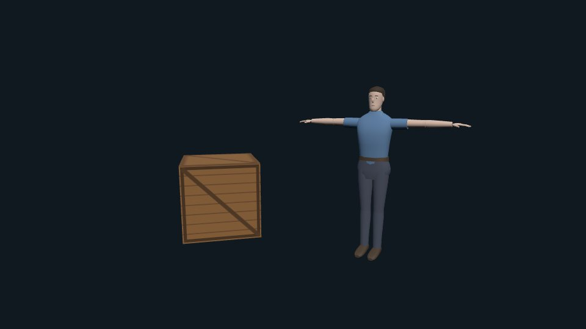

Your coding agent writes three.js.
Threesmith checks it.
API of your installed three · 97-rule review
assets & decoders · the live scene, headless
claims, perf, leaks · 3D models, no Blender
API of your installed three · 97-rule review
assets & decoders · the live scene, headless
claims, perf, leaks · 3D models, no Blender
